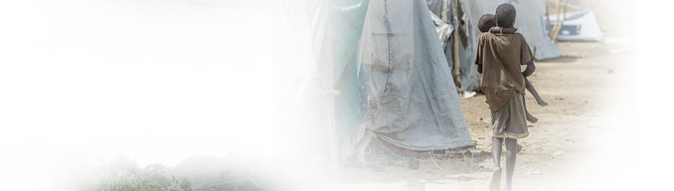
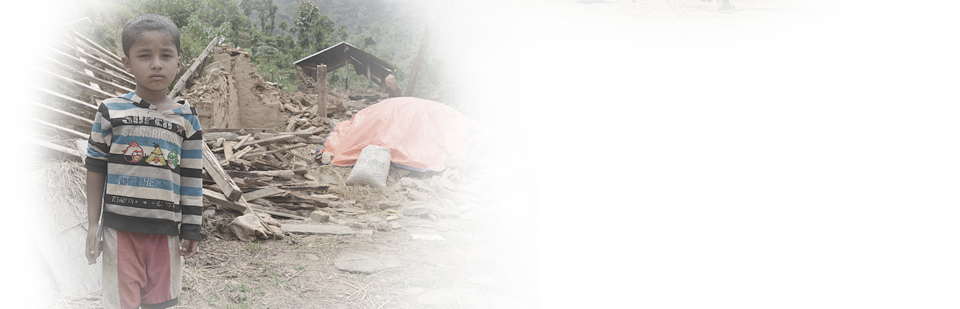

시리아 차가운 겨울, 길 위의 아이들
벌써 5년. 400만 여 명 시리아 난민들의 유랑생활은 기약이 없습니다. “내년 봄을 맞을 수 있을까요? 우리가 어떻게 살아남을 수 있을지 모르겠어요.” 요르단의 시리아 난민촌. 겨울을 앞둔 알리 씨와 아이들은 초라한 비닐 천막만으로 혹독한 추위를 이겨내야 합니다. 작은 스토브조차 없는 너무 차고 시린 바닥. 떠나온 고향의 따뜻했던 집이 더욱 그리워집니다.
남수단 전쟁만큼 배고픔이 두려운 아이들
니아킨 씨는 오늘도 냄비에 나뭇잎을 끓입니다. 배고픈 아이들에겐 줄 것이 없습니다. 하루 한 끼도 먹이기 버거운 날들. 어느 날 들이닥친 반군은 집을 불태워 버렸고, 40여 명의 이웃을 모두 죽였습니다. 위협을 피해 와랍주로 왔지만 이곳의 삶도 힘겹습니다. 지역 내 니아킨 가족과 비슷한 처지의 난민은 8천 여 명. 내전 위에 더해진 오랜 가뭄으로 아이들의 생명은 더욱 위태롭습니다.
네 팔 여전히 지진의 그날 속 아이들
“형이랑 같이 집 밖으로 뛰어나가는데 벽이 무너지면서 돌덩이가 머리 위로 떨어졌어요. 머리에서 피가 많이 나서 옷에 피가 뚝뚝 떨어졌어요. 너무 아팠지만 저는 용감하니까 울지 않았어요. 지진이 또 와서 우리가 죽으면 어떡하죠?” 강도7.8의 대지진은 순식간에 모든 것을 무너뜨렸습니다. 여섯 살의 눈으로 처참히 무너지는 세상을 본 아비쉐크. 회복의 시간은 더디게 흐릅니다.